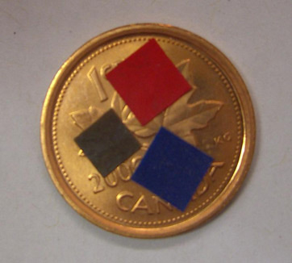
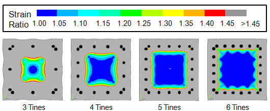
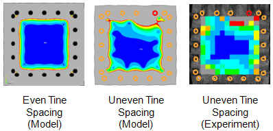
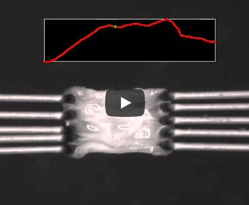
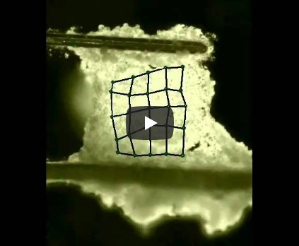

Biaxial testing of biomaterials is challenging because the specimens are often of limited size (e.g., heart valve and eye tissues) and difficult to grasp, and the materials undergo large strains.
Fig. 1 - The figure shows the small scale of the planar samples
Over time, we came to the conclusion that a discrete-point attachment system as used in the BioTester was generally preferred over a cruciform or rigidly clamped specimen. Studies of eye tissue with collaborators at the Toronto General Hospital, the University of Toronto Faculty of Engineering, the University of Waterloo faculty of Applied Health Sciences and the University of Waterloo School of Optometry led to a number of important conclusions:
In order to obtain a reasonably uniform strain state in a specimen, at least 5 attachment points should be used along each edge [1].
Fig. 2 - The strain state becomes increasingly non-uniform as the number of attachment points decreases. Finite element (FE) simulations showed that at least 5 attachment points are needed along each edge in order to produce an adequate region with sensibly uniform strain, a result that was confirmed experimentally.
Precise positioning of these attachment points is crucial [1].
Fig. 3 - Imprecise positioning of the attachment points can disrupt the strain field. (Same colour scale as Fig. 2)
In both uniaxial and biaxial testing scenarios, the attachment points must be able to undergo free lateral motions [2].
Movie 1 - A lap test used to obtain the mechanical properties of the interface between a pair of lamellae from an intervertebral disk. Movie compliments of Diane Gregory and Jack Callaghan, University of Waterloo.
FE simulations of various proposed test geometries have been important in the development of effective experimental designs and in the interpretation of experimental data.
One of the goals of this work is to determine the surface and interfacial tensions of cells by compressing small aggregates [3] between plates. Another goal is to use micro-compression testing to measure the properties of hydrogels and other low-modulus materials (MicroSquisher).
The goal of this project [4] is to measure the tensile properties of embryonic tissues, many of which are only a few hundreds of microns in size.
Movie 2 - Tensile test of a specimen of embryonic epithelium.
REFERENCES
© Copyright - G. Wayne Brodland
Designed by The Story Web Design & Marketing